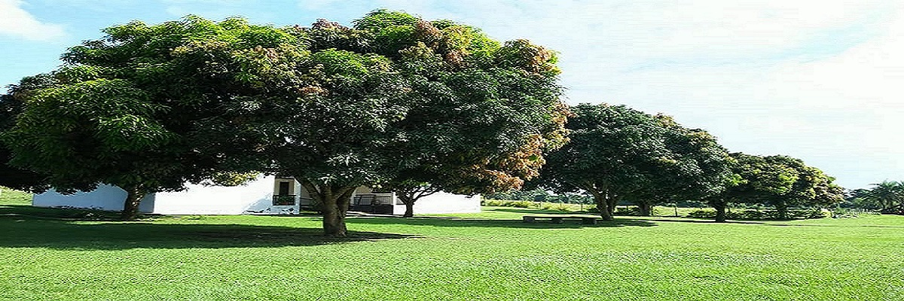

We are located 3km from the main campus
along Kayabwe road off Nkozi Trading Centre. We conduct outreach activities to dessiminate the solutions beyond UMU. this is done through the attachment of students to outreach firms/farms to strengthen capacity of practitioners in different disciplines.
Come and aquire hands-on-skills in both crop and animal farming & management.